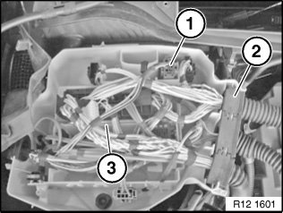
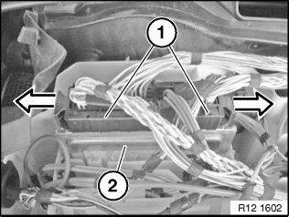

Engine Control Module: Service and Repair
12 14 550 Replacing Control Unit (DME)

Necessary preliminary work:
- Switch off ignition.
- Clamp off battery.
- Remove microfilter housing.
IMPORTANT: Follow instructions for removing and installing control units

IMPORTANT: Read and comply with notes on protection against electrostatic damage (ESD protection).

Replacement:
- Carry out programming/encoding

IMPORTANT: It is absolutely essential to read out the fault memory with the BMW diagnosis system and to create a fault memory printout.
Switch off ignition.

Unlock fasteners (1) from below and slide upwards approx. 10 mm.
Unlock locks (2) in direction of arrow.
Remove cover (3).

Unlock connector (1) and remove.
Release grommet (2) from electronics box.
Installation note:
Make sure grommet (2) is correctly seated in housing (watertightness).
Unlock control unit (3) and raise slightly.

Unlock connectors (1) using slide in direction of arrow and remove.
Remove control unit (2).
Installation note:
Replacement:
Note control unit identification number and encoding.

NOTE:
Check stored fault messages.
Delete fault memory.